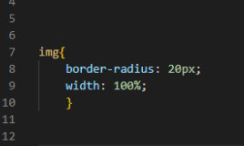
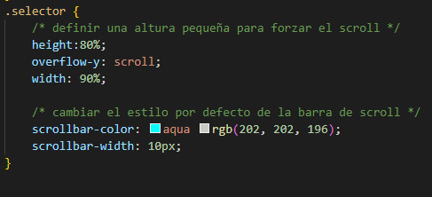

BLOG
MI FORMA DE TRABAJAR
En un dia donde es requerido realizar tareas de baja energia suelo escuchar musica mientras escribo algunas lineas de codigo, es inspirador para mi ya que me despiertan ideas que luego termino plasmando a la pagina, en algunos casos dejandolo en stand-by para otros proyectos.
Ademas tengo una libreta de anotacion donde suelo escribir estas ideas esperando que llegue su momento para poder ser creado.
Mi forma de ver las cosas creer y crear, todo lo que puedes imaginar se puede crear.
Les comparto algunos temas que mas me gusta escuchar seguido con los articulos publicados del blog.
MI PRIMER TAREA APLICANDO BOX MODEL PARA AJUSTAR UNA IMAGEN
Teniendo en cuenta que todos los elementos del html son cajas, hubo varias imagenes que salian de las propiedades de la caja, fue una tarea si bien sencilla necesario de empezar con el pie derecho.
Use box model width a la propiedad CSS que controla la anchura de la caja de los elementos.
Tambien tenemos height que controla la altura de la caja de los elementos, pero en ese caso no fue necesario.
Importante tener en cuenta que la propiedad width no acepta valores negativos, no funciona con los elementos en línea que no son imágenes. Ademas si se añaden márgenes, bordes y rellenos, la anchura total con la que se muestra el elemento será mayor que el valor de la propiedad width.
CAMBIANDO EL DISEÑO DE LAS BARRAS DE SCROLL
Una de las recomendaciones fundamentales para una buena usabilidad es no modificar en exceso el diseño de los elementos que forman parte de la interfaz de usuario del sistema operativo, tales como botones, elementos select, las barras de scroll, etc. Hacerlo complica el uso de tu sitio o aplicación web porque el usuario tiene que aprender a reconocerlos.
No obstante, como toda norma tiene sus excepciones, a veces puede ser necesario modificar estos elementos en algunos diseños muy especiales.
Los tres escenarios para los que se ha pensado este estándar son:
Cambiar el color de las barras de scroll para adaptarlas al diseño de la aplicación o sitio web.
Mostrar barras de scroll más finas de lo normal cuando un elemento lo requiera.
Diseñar barras de scroll totalmente personalizadas si el diseño así lo requiere.
Para ello se han definido dos nuevas propiedades CSS (scrollbar-color y scrollbar-width) que se pueden aplicar a la página entera y también a cualquier elemento
QUE ES UN BLOG
Los blogs comenzaron su irrupción en internet a mediados de los años 90 y pronto supusieron uno de los puntos de inflexión en la red de redes, al facilitar a cualquier usuario la posibilidad de llevar sus palabras a un público potencialmente enorme. La clave del éxito estaba en buena parte en la simplificación del proceso, lo que eliminaba muchas barreras a usuarios sin conocimientos técnicos.
Los blogs se caracterizan por tener un contenido que se amplia con cierta regularidad.
La frecuencia de actualización resulta fundamental, pues es lo que hace que los visitantes regresen para consultar el contenido nuevo, al contrario de lo que ocurre en webs estáticas donde el usuario solo accede de forma puntual a consultar una información y una resuelta su necesidad no encuentra motivos para el regreso.
Lo importante en un blog es el contenido, por lo que los sistemas de gestión deben facilitar principalmente la inclusión y manejo
del mismo. Además, el orden cronológico es el que prima. Las portadas de los blogs son generalmente un listado cronológico de todas las entradas, donde las más recientes se muestra primero, ya se completamente o mediante un resumen que invita a leer el contenido completo de la entrada.
Pese a esta priorización a modo de pila, en la que el contenido antiguo es desplazado por el nuevo, suelen contar con sistemas de organización más allá de la fecha, como son la categorización (estructurados y jerárquicos) y el etiquetado (a modo de palabras clave) que facilitan la búsqueda por contenido.Los blogs por tanto, son un tipo de página web centrada en inclusión de contenido con cierta regularidad. Muchas veces se usa el término distinguiéndolo de otro que si bien es más genérico no es contrapuesto: sitio web.

